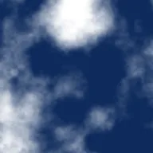

Wolken

Bedeckt die deckenden Bereiche der Ebene mit einem weichen Wolkenmuster, das sich auch als Rauschquelle eignet.
Einstellungen
| Einstellung | Typ | Bereich | Standard |
|---|---|---|---|
| Parallaxe | Punkt (X, Y) | -5000 px bis 5000 px | 0 px, 0 px |
| Versatz | Punkt (X, Y) | -5000 px bis 5000 px | 0 px, 0 px |
| Skalierung | Zahl | 0.01 bis 50 | 1 |
| Streckung | Punkt (X, Y) | 0.01 bis 10 | 1, 1 |
| Intensität | Zahl | 0.25 bis 0.75 | 0.5 |
| Startwert | Zahl | 0 bis 5 | 0 |
| Farbe 1 | Farbe | – | #000000 |
| Farbe 2 | Farbe | – | #FFFFFF |
| Oktaven | Zahl | 1 bis 9 | 6 |